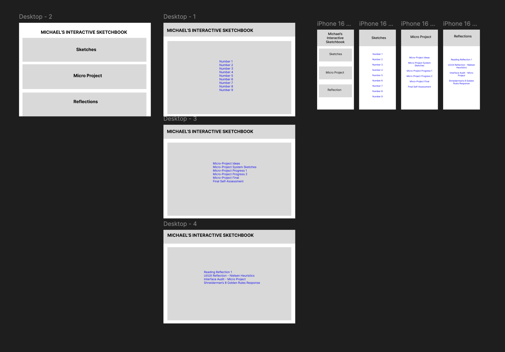

Some structural changes I decided to make this week are dedicated for the phone display but I also decided to make some changes to the desktop. The changes from the desktop were made because I got inspired from my breakout room, because they had like a home page that separated them into different sections such as the sketches and thought that I should add that to mine, the micro projects and the reflections. I basically made the same changes to the phone screen but obviously with the altered sizes of the phone. I feel like this makes the whole site look way more organized and not as cluttered as it used to be. There is more space for more links for each section. Before having all the links in the home page made it seemed all jammed together and it just didn’t really have structure. I’m not entirely sure what it can still be missing other than it looking sort of empty so maybe that is the next thing that I am going to work on next.
